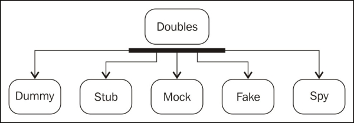

What are the characteristics of an unit test ? |
A unit test should exhibit the following characteristics:
|
What are test doubles ? Can you list them ? |
Test doubles act as stunt doubles. They are a skilled replacement of the collaborator objects and allow you to unit test code in isolation from the original collaborator. Gerard Meszaros coined the term test doubles in his book xUNIT TEST PATTERNS, Addison-Wesley—this book explores the various test doubles and sets the foundation for Mockito. Test doubles can be created to impersonate collaborators and can be categorized into the types, as shown in the following diagram:  |
what is a stub ? |
A stub delivers indirect inputs to the caller when the stub's methods are called. Stubs are programmed only for the test scope. Stubs may record other information such as how many times they are invoked and so on. Stubs are very handy to impersonate error conditions and external dependencies (you can achieve the same thing with a mock; this is just one approach). Suppose you need to test a code that looks up a JNDI resource and asks the resource to return some value. You cannot look up a JNDI resource from a JUnit test; you can stub the JNDI lookup code and return a stubbed object that will give you a hardcoded value. |
what is a spy ? |
As the name suggests, a spy object spies on a real object. A spy is a variation of a stub, but instead of only setting the expectation, a spy records the method calls made to the collaborator. A spy can act as an indirect output of the unit under test and can also act as an audit log. |
what is a mock ? |
A mock object is a combination of a spy and a stub. It acts as an indirect output for a code under test, such as a spy, and can also stub methods to return values or throw exceptions, like a stub. A mock object fails a test if an expected method is not invoked or if the parameters of the method don't match. |
what is a fake object ? |
A fake object is a test double with real logic (unlike stubs) and is much more simplified or cheaper in some way. We do not mock or stub a unit that we test; rather, the external dependencies of the unit are mocked or stubbed so that the output of the dependent objects can be controlled or observed from the tests. The fake object replaces the functionality of the real code that we want to test. Fakes are also dependencies, and don't mock via subclassing (which is generally always a bad idea; use composition instead). Fakes aren't just stubbed return values; they use some real logic. The following are the reasons behind using a fake object:
Fake objects are working implementations. Mostly, the fake class extends the original class, but it usually performs hacking, which makes it unsuitable for production. |
how you create a mock object with mockito ? |
A mock object can be created with the help of a static method mock(). You need to invoke the Mockito.mock() method or static import Mockito's mock() method. There's another way of mocking objects — using the @Mock annotation. But to work with the @Mock annotation, it is necessary to call MockitoAnnotations.initMocks(this) before using the mocks; or use MockitoJUnitRunner as a JUnit runner. |
What object mockito cannot mock/spy ? |
Mockito cannot mock/spy the following things:
PowerMock has the capability to mock these constructs. |
what does represent the method when in mockito ? |
The Mockito framework supports stubbing and allows us to return a given value when a specific method is called. It can be done using Mockito.when() along with thenReturn(). The following test code stubs the retrieve method for CountryDao and returns an empty list. Finally, the stubbing is verified using the assertTrue method: @Test public void retrieves_empty_country_list() throws Exception { List<Country> list = new ArrayList<Country>(); list.add(new Country()); when(countryDao.retrieve(isA(RetrieveCountryRequest.class))).thenReturn(emptyList); assertTrue(countryDao.retrieve(new RetrieveCountryRequest()).size() == 1); } The when() method represents the trigger—when to stub it. The following methods are used to represent a trigger action or what to do when the trigger is triggered.
|
what does represent the method thenReturn in mockito ? |
The thenReturn() method has a variant; it can either return a hardcoded value or can accept variable arguments of hardcoded values. What follows are the three ensuing variants:
The thenReturn(value) variant returns the same hardcoded value for each method call, whereas when(mock.someMethod()).thenReturn(10,5,100) returns the following values:
|
can you describe each step of this code snippet ? @Test public void retrieves_empty_country_list() throws Exception { when(request.getParameter(anyString())).thenReturn("1", "10",SortOrder.ASC.name(), SortColumn.iso.name()); List<Country> countryList = new ArrayList<Country>(); countryList.add(new Country()); when(countryDao.retrieve(isA(RetrieveCountryRequest.class))).thenReturn(countryList); JsonDataWrapper<Country> response = ajaxController.retrieve(request); assertEquals(1, response.getPage()); assertEquals(1, response.getTotal()); assertEquals(1, response.getRows().size()); } |
The RequestBuilder class calls the getParameter() method of HttpServletRequest to fetch the request parameters. Sequentially, it calls webReq.getParameter("page"), webReq.getParameter("rp"), webReq.getParameter("sortorder"), and webReq.getParameter("sortname"). In the test method, we stubbed the getParameter call with a variable argument thenReturn style. We used two Mockito matchers, namely, anyString and isA. The anyString() matcher is used to stub the getParameter method. The getParameter method accepts a string argument, such as webReq.getParameter("page"). The anyString matcher is used as a generic argument matcher. This means, no matter what value is passed to the getParameter method, it will return a hardcoded value. The isA matcher is used to stub the retrieve method of CountryDao to get the following:
|
How do we test exceptional conditions such as database access failure? |
For this, Mockito provides a thenThrow(Throwable)method. This method tells the Mockito framework to throw a throwable (could be exception or error) when the stubbed method is invoked. JUnit 4.0 provides a way to test exceptions using @Test(expected=<exception>). We'll stub the countryDao access call to throw an exception and assert the exception using @Test(execpted=). If the test doesn't throw any exception, it will fail: @Test(expected=RuntimeException.class) public void when_system_throws_exception() { when(request.getParameter(anyString())).thenReturn("1", "10", SortOrder.DESC.name(), SortColumn.iso.name()); when(countryDao.retrieve(isA(RetrieveCountryRequest.class))). thenThrow(new RuntimeException("Database failure")); JsonDataWrapper<Country> response = ajaxController.retrieve(request) } To throw an exception from a void method, use the following code syntax: doThrow(exception).when(mock).voidmethod(arguments); Checking and throwing RuntimeException is not recommended. Instead, we can use a specific exception in production code. In JUint 4, there exists an ExpectedException rule API for exception handling. |
can you describe what is an argument matcher in mockito ? |
The argument matcher plays a key role in mocking. Mock objects return expected values, but when they need to return different values for different arguments, the argument matcher comes into play. Suppose we have a method that takes a cricket player's name as an input and returns the number of runs as an output. We want to stub it and return 100 for the player Sachin and 10 for xyz. We have to use the argument matcher to stub this. Mockito returns expected values when a method is stubbed. If the method takes arguments, the argument must match during the execution. For example, the getValue(int someValue) method is stubbed in the following way: when(mockObject.getValue(1)).thenReturn(expected value); Here, the getValue method is called with mockObject.getValue(100). The parameter doesn't match (it is expected that the method will be called with 1, but at runtime it encounters 100), so the mock object fails to return the expected value. It will return the default value of the return type. If the return type is int or short or long, it returns 0 for wrapper types such as integer and long. If it returns NULL for Boolean, it'll return false if the object is null and so on. Mockito verifies argument values in natural Java style by using an object's equals() method. Sometimes, we use argument matchers when extra flexibility is required. Mockito provides built-in matchers, such as anyInt(), anyDouble(), anyString(), anyList(), and anyCollection(). More built-in matchers and examples of custom argument matchers / hamcrest matchers can be found at the following link: NOTE Examples of other matchers are isA(java.lang.Class<T> clazz), any(java.lang.Class<T> clazz), and eq(T) or eq(primitive value). The isA matcher checks whether the passed object is an instance of the class type passed in the isA argument. The any(T) matcher also works in the same way. |
what are the constraints when using arguments matchers ? |
While using argument matchers, all arguments have to be provided by matchers. We're passing three arguments, and all of them are passed using matchers in the following manner: verify(mock).someMethod(anyInt(), anyString(), eq("third argument")); The following example will fail because the first and the third argument are not passed using a matcher: verify(mock).someMethod(1, anyString(), "third argument"); |
Can you describe each line of this code snippet ? @Test public void verify_multiple_values() throws Exception { double marks = 100.00; assertThat(marks, either(is(100.00)).or(is(90.9))); assertThat(marks, both(not(99.99)).and(not(60.00))); assertThat(marks, anyOf(is(100.00),is(1.00),is(55.00),is(88.00),is(67.8))); assertThat(marks, not(anyOf(is(0.00),is(200.00)))); assertThat(marks, not(allOf(is(1.00),is(100.00), is(30.00)))); } |
In the preceding example, a double variable mark is initialized with the value 100.00. This variable value is asserted with an either matcher. Basically, using either, we can compare two values against an actual/calculated value. If any of them match, the assertion is passed. If none of them match, AssertionError is thrown. The either(Matcher) takes a matcher and returns a CombinableEitherMatcher class. The CombinableEitherMatcher class has an or(Matcher other) method so that either and or can be combined: or(Matcher other) is translated as return (new CombinableMatcher(first)).or(other); -> finally to new CombinableMatcher(new AnyOf(templatedListWith(other))); Using both, we can compare two values against an actual/calculated value. If neither of them match, the assertion error is thrown. If both of them match, the assertion is passed. A numeric value, like math score, cannot be equal to both 60 and 80. But we can negate the expression. If the math score is 80, using the both matcher, we can write the expression as assertThat (mathScore , both (not(60)). and(not (90))). The anyOf matcher is more like either with multiple values. Using anyOf, we can compare multiple values against an actual/calculated value. If any of them match, the assertion is passed. If none of them match, the assertionError is thrown. The allOf matcher is more like both with multiple values. Using allOf, we can compare multiple values against an actual/calculated value. If none of them match, the assertionError is thrown. Just like both, we can use allOf, along with not, to check that a value doesn't belong to a set. |
how could you test an invocation of a method, especially if it is called redundantly ? |
To verify a redundant method invocation or if a stubbed method was not called but was important from the test perspective, we should manually verify the invocation. We need to use the static verify method. Mock objects are used to stub external dependencies. We set an expectation and a mock object returns an expected value. In some conditions, a behavior/method of a mock object should not be invoked, or sometimes we may need to call the method N (a number) times. The verify method verifies the invocation of mock objects. Mockito does not automatically verify all stubbed calls; JMock does this automatically. If a stubbed behavior should not be called, but is called due to bug in a code, the verify method flags the error (but we have to verify that manually). The void methods don't return a value; verify is very handy to test a void method's behavior (explained later). The verify() method has an overloaded version, which takes VerificationMode (AtLeast, AtMost, Times, and so on) as an argument. The Times mode is a Mockito framework class of package, org.mockito.internal.verification, and it takes the integer argument, wantedNumberOfInvocations. If 0 is passed to Times, it infers that the method will not be invoked in the testing path. We can pass 0 to Times(0) to make sure that the sell or buy methods are not invoked. If a negative number is passed to the Times constructor, Mockito throws MockitoException - org.mockito.exceptions.base.MockitoException and shows the Negative value is not allowed here error. The following methods are used in conjunction with verify:
|
what is the verifyZeroInteractions method in mockito ? |
The verifyZeroInteractions (object, mocks) method verifies that no interactions happened on the given mocks. The following test code directly calls the verifyZeroInteractions and passes the two mock objects. Since no methods are invoked on the mock objects, the test passes. @Test public void verify_zero_interaction() { verifyZeroInteractions(request,countryDao); } This is useful if your code depends on two or more collaborators. For a given input, only one collaborator should handle the request while others should just ignore the request. The verifyNoMoreInteractions (Object, mocks) method checks if any of the given mocks have any unverified interaction. We can use this method after verifying a mock method to make sure that nothing else was invoked on the mock. This is generally not a good practice as it makes your tests overly brittle and you end up testing more than just what you care about. The following test code demonstrates the verifyNoMoreInteractions method: @Test public void verify_nomore_interaction() { request.getParameter("page"); request.getContextPath(); verify(request).getParameter(anyString()); //this will fail getContextPath() is not verified verifyNoMoreInteractions(request); } |
how can you stub a method in order to return a dynamic value ? |
Stubbed methods return a hardcoded value but cannot return a dynamic on-the-fly result. Mockito framework offers callbacks to compute on-the-fly results. Mockito allows stubbing with the generic Answer interface; this is a callback. When a stubbed method on a mock object is invoked, the answer(InvocationOnMock invocation) method of the Answer object is called. This Answer object's answer() method returns the actual object. The syntax is similar to thenReturn() and thenThrow(): when(mock.someMethod()).thenAnswer(new Answer() {…}); Alternatively, we can also use the following syntax: when(mock.someMethod()).then(answer); The Answer interface is defined as follows: public interface Answer<T> { T answer(InvocationOnMock invocation) throws Throwable; } The InvocationOnMock argument is an important part of a callback. It gives you the arguments passed to the method and the mock object as well. The following methods of InvocationOnMock are used to get the arguments and the mock object: Object[] args = invocation.getArguments(); Object mock = invocation.getMock(); The retrieve method of CountryDao is stubbed. We'll create an answer object to dynamically sort the country list based on the input sort order. |
can you give an implementation of the Answer class ? |
In test class, create a list for storing countries, and in the setUp method, populate the list with countries. The following is the changed test code: @Before public void setUp() { ajaxController = new AjaxController(countryDao); countries = new ArrayList<Country>(); countries.add(create("Argentina", "AR", "32")); countries.add(create("USA", "US", "01")); countries.add(create("Brazil", "BR", "05")); countries.add(create("India", "IN", "91")); } Write a new Answer class to sort the countries list based on the user input. The following example is the custom Answer class: class SortAnswer implements Answer<Object> { @Override public Object answer(InvocationOnMock invocation) throws Throwable { RetrieveCountryRequest request = (RetrieveCountryRequest) invocation.getArguments()[0]; final int order = request.getSortOrder().equals(SortOrder.ASC) ? 1: -1; final SortColumn col = request.getSortname(); Collections.sort(countries, new Comparator<Country>() { public int compare(Country arg0, Country arg1) { if (SortColumn.countryCode.equals(col)) return order * arg0.getCountryCode().compareTo(arg1.getCountryCode()); if (SortColumn.iso.equals(col)) return order * arg0.getIso().compareTo(arg1.getIso()); return order * arg0.getName().compareTo(arg1.getName()); } }); return countries; } } The answer method gets the request object and sorts the countries list based on the SortOrder and SortColumn attributes. The following test verifies the ascending and descending sorting: @Test public void sorting_asc_on_iso() { when(request.getParameter(anyString())).thenReturn("1", "10", SortOrder.ASC.name(), SortColumn.iso.name()); when(countryDao.retrieve(isA(RetrieveCountryRequest.class))).thenAnswer(new SortAnswer()); JsonDataWrapper<Country> response = ajaxController.retrieve(request); assertEquals("AR", response.getRows().get(0).getIso()); assertEquals("BR", response.getRows().get(1).getIso()); assertEquals("IN", response.getRows().get(2).getIso()); assertEquals("US", response.getRows().get(3).getIso()); } @Test public void sorting_desc_on_iso() { when(request.getParameter(anyString())).thenReturn("1", "10",SortOrder.DESC.name(), SortColumn.iso.name()); when(countryDao.retrieve(isA(RetrieveCountryRequest.class))).thenAnswer(new SortAnswer()); JsonDataWrapper<Country> response = ajaxController.retrieve(request); assertEquals("AR", response.getRows().get(3).getIso()); assertEquals("BR", response.getRows().get(2).getIso()); assertEquals("IN", response.getRows().get(1).getIso()); assertEquals("US", response.getRows().get(0).getIso()); } |
what is the design and architecture behind mockito ? |
Mockito applies the proxy design pattern to create mock objects. For concrete classes, Mockito internally uses CGLib to create proxy stubs. CGLib is used to generate dynamic proxy objects and intercept field access. The following URL talks about CGLib: The following sequence diagram depicts the call sequence. The ClassImposterizer class is a singleton class. This class has a createProxyClass method for generating a source using CGLib. Finally, it uses reflection to create an instance of the proxy class. Method calls are stubbed using the callback API of MethodInterceptor.  The MethodInterceptor class acts as a Java reflection class, java.lang.reflect.InvocationHandler. Any method call on a mock object (proxy) is handled by a MethodInterceptor instance. We'll create a custom mocking framework to handle external dependencies. We'll use the Java reflection framework's dynamic proxy object-creation API. The java.lang.reflect.Proxy method provides a Proxy.newProxyInstance(ClassLoader, Class, InvocationHandler) API to create dynamic proxy objects. The InvocationHandler interface has the following signature: public interface InvocationHandler { public abstract Object invoke(Object obj, Method method, Object aobj[]) throws Throwable; } All method calls to a proxy object are redirected to the invoke method. |
what's the job of the methods doCallRealMethod and doNothing ? |
The doNothing() method does nothing. By default, when we create a mock object and call a void method on that mock object, the void method does not do anything, or rather, it is stubbed by default, but still, we stub void methods using doNothing() for void method chaining. If you need consecutive calls on a void method, the first call to throw an error, the next call to do nothing, and then the call after that to perform some logic using doAnswer(), then follow the ensuing syntax: doThrow(new RuntimeException()). doNothing(). doAnswer(someAnswer). when(mock).someVoidMethod(); The doCallRealMethod() method is used when you want to call the real implementation of a method on a mock object. The following is the syntax: doCallRealMethod().when(mock).someVoidMethod(); |
what's the job of the method doReturn ? |
The doReturn() method is like thenReturn(), but this is used only when when(mock).thenReturn(return) cannot be used. The when().thenReturn() method is more readable than doReturn(). Also, doReturn() is not type safe. The thenReturn method checks method return types and raises a compilation error if an unsafe type is passed. You can use doReturn() when working with spy objects. Here is the syntax for using the doReturn() test: doReturn(value).when(mock).method(argument); The following code snippet provides an example of unsafe usage of doReturn: @Test public void when_do_return_is_not_safe() throws Exception { when(request.getServletPath()).thenReturn("/logon.do"); assertEquals("/logon.do", request.getServletPath()); doReturn(1.111d).when(request.getServletPath()); request.getServletPath(); } |
what is an argument captor ? |
Verifying arguments using ArgumentCaptor An ArgumentCaptor object verifies the arguments passed to a stubbed method. Sometimes, we create an object in our code under test and then pass it to a method on a mocked dependency, but never return it. Argument captors let us directly access these values provided to our mocks in order to examine them more closely. An ArgumentCaptor object provides an API to test the computed value. An ArgumentCaptor object is defined as follows: ArgumentCaptor<T> argCaptor= ArgumentCaptor.forClass(T.class); Where T is the type of argument, such as a string or a user-defined class. The following syntax is used to capture arguments: verify(mockObject).methodA(argCaptor.capture()); If an ArgumentCaptor object captures arguments for multiple invocations, the captured values can be retrieved by calling the getAllValues() method. The getAllValues() method returns List<T> and the getValue() method returns T, which is the last method invocation result. Here, T is the type of argument class, such as an integer or any Java class type. The following code uses an ArgumentCaptor to verify the argument passed into the lookUp method. ArgumentCaptor<String> captor = ArgumentCaptor.forClass(String.class); verify(repository).lookUp(captor.capture()); assertEquals("123", captor.getValue()); |
how do you capture collection arguments in mockito ? |
The following example demonstrates how to capture collection arguments. Create an interface and add a method to accept a list of strings. The following is the code: interface Service{ void call(List<String> args); } Try to create an ArgumentCapture for the list of strings. You cannot create a class for List<String>.class, so you can try to use List.class. The following screenshot shows you the Java compilation error while converting List.class to List<String>:  The following code snippet creates List.class and casts it to Class<List<String>>, and passes it to ArgumentCaptor. This will give you warnings about unsafe casts; you can suppress the warning by annotating the construct with @SuppressWarnings("unchecked"): @Test public void when_captures_collections() throws Exception { Class<List<String>> listClass = (Class<List<String>>)(Class)List.class; ArgumentCaptor<List<String>> captor = ArgumentCaptor.forClass(listClass); } The following test provides an example of such a use. Here, service is a mocked implementation of the Service interface: @Test public void when_captures_collections(){ Class<List<String>> listClass = (Class<List<String>>)(Class)List.class; ArgumentCaptor<List<String>> captor = ArgumentCaptor.forClass(listClass); service.call(Arrays.asList("a","b")); verify(service).call(captor.capture()); assertTrue(captor.getValue(). containsAll(Arrays.asList("a","b"))); |
how can you use an argument capture with arrays and variables ? |
The following example shows you how to capture an argument of type arrays or var-args (T... t). Modify the MessageRepository class to accept variable arguments of strings as errorCodes. The following is the modified code: public interface MessageRepository { String lookUp(String... errorCode); } Create a test to pass an array to the lookUp method and capture values. The following is the code snippet: @Test public void when_capturing_variable_args() throws Exception { String[] errorCodes = {"a","b","c"}; ArgumentCaptor<String> captor = ArgumentCaptor.forClass(String.class); repository.lookUp(errorCodes); verify(repository).lookUp(captor.capture(),captor.capture(),captor.capture()); assertTrue(captor.getAllValues().containsAll(Arrays.asList(errorCodes))); } |
how could you verify the invocation order inside a method ? |
Mockito facilitates verification if interactions with a mock were performed in a given order using the InOrder API. It allows us to create an InOrder of mocks and verify the call order of all the calls of all the mocks. InOrder is created with mock object using the following syntax: InOrder inOrder=inOrder(mock1,mock2,...mockN); Method invocation order is checked using the following syntax: inOrder.verify(mock1).methodCall1(); inOrder.verify(mock2).methodCall2(); If methodCall2() of mock2 is invoked before methodCall1() of mock1, the test fails. The following test verifies the test order: @Test public void when_inorder() throws Exception { request.getServletPath(); service.call(Arrays.asList("a","b")); InOrder inOrder=inOrder(request,service); inOrder.verify(service).call(anyList()); inOrder.verify(request).getServletPath(); } The test verifies that the call() method is invoked before the getServletPath() method, but the methods were invoked in reverse order, so the test will fail. The following screenshot demonstrates the error:  Reordering the verification sequence in the following manner fixes the test: @Test public void when_inorder() throws Exception { request.getServletPath(); service.call(Arrays.asList("a","b")); InOrder inOrder=inOrder(request,service); inOrder.verify(request).getServletPath(); inOrder.verify(service).call(anyList()); } |
how do you create spy with mockito ? |
A Mockito spy allows us to use real objects instead of mocks by replacing some of the methods with stubbed ones. This behavior allows us to test the legacy code. The spy is useful for legacy code as you cannot invoke a few testing impediment methods from your code under test, and also, you cannot mock a class that needs to be tested. A spy can stub these testing impediments without mocking the code under test. A spy can stub the nontestable methods so that other methods can be tested easily. You can also use spies without doing any stubbing and just use them to verify interactions between two totally real objects. Once an expectation is set for a method on a spy object, the spy object no longer returns the original value. It starts returning the stubbed value, but still exhibits the original behavior for the other methods that are not stubbed. Mockito can create a spy for a real object. Unlike stubbing, when we use the spy object, real methods are called (unless a method was stubbed). Spy is also known as partial mock. The following is the declaration of spy: SomeClass realObject = new RealImplemenation(); SomeClass spyObject = spy(realObject); The following is a self-explanatory example of spy: @Test public void when_spying_real_objects() throws Exception { Error error = new Error(); error.setErrorCode("Q123"); Error spyError = spy(error); //call real method from spy assertEquals("Q123", spyError.getErrorCode()); //Changing value using spy spyError.setErrorCode(null); //verify spy has the changed value assertEquals(null, spyError.getErrorCode()); //Stubbing method when(spyError.getErrorCode()).thenReturn("E456"); //Changing value using spy spyError.setErrorCode(null); //Stubbed method value E456 is returned NOT NULL assertNotEquals(null, spyError.getErrorCode()); //Stubbed method value E456 assertEquals("E456", spyError.getErrorCode()); } |
what kind of side effects does have a spy object ? |
Spying real objects and calling real methods on a spy object has side effects; to immunize this side effect, use doReturn() instead of thenReturn(). The following code describes the side effect of spying and calling thenReturn(): @Test public void when_doReturn_fails() throws Exception { List<String> list = new ArrayList<String>(); List<String> spy = spy(list); //impossible the real list.get(0) is called and fails //with IndexOutofBoundsException, as the list is empty when(spy.get(0)).thenReturn("not reachable"); } The spy object calls a real method when trying to stub get(index), and unlike the mock objects, the real method was called and it failed with an ArrayIndexOutOfBounds error. The following screenshot displays the failure message:  This failure can be protected using doReturn(), as shown is the following code: @Test public void when_doReturn_fails() throws Exception { List<String> list = new ArrayList<String>(); List<String> spy = spy(list); //doReturn fixed the issue doReturn("now reachable").when(spy).get(0); assertEquals("now reachable", spy.get(0)); } |
what are the notations implemented by mockito ? |
We learned that Mockito supports the @Mock annotation for mocking. Like @Mock, Mockito offers three useful annotations, namely, @Spy, @Captor, and @InjectMocks:
|
can you give an example of the captor notation ? |
The following example demonstrates the @Captor annotation: @RunWith(MockitoJUnitRunner.class) public class AnnotationTest { @Captor ArgumentCaptor<List<String>> captor; @Mock Service service; @Test public void when_captor_annotation_is_used() { service.call(Arrays.asList("a","b")); verify(service).call(captor.capture()); assertTrue(captor.getValue().containsAll(Arrays.asList("a","b"))); } } The annotation creates the ArgumentCaptor object, and we don't need to typecast it to Class<List<String>>. |
can you show an example of using the spy notation ? |
The following example demonstrates the use of the @spy annotation: @RunWith(MockitoJUnitRunner.class) public class SpyAnnotationTest { @Spy ErrorHandlerImpl errorHandler; @Test public void when_spy_annotation_is_used() throws Exception { assertNotNull(errorHandler); } } A Spy object of ErrorHandlerImpl is created automatically for errorHandler. You cannot create a spy for an interface. The following error message pops up when we try to create a spy for the ErrorHandler interface: @Spy ErrorHandler errorHandler; The following screenshot displays the error message:  |
Can you show an example using the InjectMocks notation ? |
The following example demonstrates the use of the @InjectMocks annotation. Here, we'll create a @spy annotation and two @mocks annotations. The @InjectMocks annotation sets the mocks and spy to the real object as a constructor injection. @RunWith(MockitoJUnitRunner.class) public class InjectMocksAnnotationTest { @Mock LoginController loginController; @Mock MessageRepository repository; @Spy ErrorHandlerImpl errorHandler; @InjectMocks DemoController controller; @Mock HttpServletRequest request; @Mock HttpServletResponse response; @Mock RequestDispatcher dispatcher; @Test public void when_mocks_are_injected() throws Exception { when(request.getServletPath()).thenReturn("/"); when(request.getRequestDispatcher(anyString())).thenReturn(dispatcher); controller.doGet(request, response); verify(request).getRequestDispatcher(eq("login.jsp")); } } The DemoController constructor depends on three classes; the preceding example creates the mock and spy objects and injects them to the DemoController constructor. |
how can you change default behaviours of mockito ? |
We learned that nonstubbed methods of a mock object return default values, such as Null for an object and false for a Boolean. However, Mockito allows us to change the default settings to return other nondefault values; these are basically preconfigured answers. The following are settings that are allowed:
|
can you show an example of the RETURNS_DEFAULTS setting ? |
The following test case uses the RETURNS_DEFAULTS setting to return a NULL Bar object: @Test public void when_default_settings() throws Exception { Foo fooWithReturnDefault = Mockito.mock(Foo.class, Mockito.RETURNS_DEFAULTS); // default null is returned assertNull(fooWithReturnDefault.getBar()); } |
can you show an example of using the REtuRNS_SMART_NULLS setting ? |
The following test case uses the RETURNS_SMART_NULLS setting to return a smart NULL object: @Test public void when_changing_default_settings_to_return_smartNULLS(){ Foo fooWithSmartNull = Mockito.mock(Foo.class, Mockito.RETURNS_SMART_NULLS); // a smart null is returned assertNotNull(fooWithSmartNull.getBar()); System.out.println("fooWithSmartNull.getBar() =" + fooWithSmartNull.getBar()); } The following is the System.out output: fooWithSmartNull.getBar() =SmartNull returned by this unstubbed method call on a mock:foo.getBar(); |
can you show an example of using the RETURNS_MOCKS setting ? |
The following test case uses the RETURNS_MOCKS setting to return a mock object hierarchy: @Test public void when_changing_default_settings_to_return_mocks() { Foo fooWithReturnsMocks = Mockito.mock(Foo.class, Mockito.RETURNS_MOCKS); // a mock is returned Bar mockBar = fooWithReturnsMocks.getBar(); assertNotNull(mockBar); assertNotNull(mockBar.getTar()); assertNotNull(mockBar.getTar().getName()); System.out.println("fooWithReturnsMocks.getBar()=" + mockBar); System.out.println("fooWithReturnsMocks.getBar().getTar().getName()={" + mockBar.getTar().getName()+"}"); } The RETURNS_MOCKS setting populates the Foo object with a mocked Bar object. A mocked Bar object has a mocked Tar object and the mocked Tar object has an empty mocked string name. The following is the output: fooWithReturnsMocks.getBar()=Mock for Bar, hashCode: 1620275837 fooWithReturnsMocks.getBar().getTar().getName()={} |
can you show an example of use of the RETURNS_DEEP_STUBS setting ? |
The following test case uses the RETURNS_DEEP_STUBS setting to return a deep-stubbed object hierarchy: @Test public void when_returns_deep_stub() throws Exception { Foo fooWithDeepStub = Mockito.mock(Foo.class, Mockito.RETURNS_DEEP_STUBS); when(fooWithDeepStub.getBar().getTar().getName()).thenReturn("Deep Stub"); // a deep stubbed mock is returned System.out.println("fooWithDeepStub.getBar().getTar().getName()="+ fooWithDeepStub.getBar().getTar().getName()); assertNotNull(fooWithDeepStub.getBar().getTar().getName()); } The RETURNS_DEEP_STUBS setting is very useful for legacy code. In the preceding example, we had to stub the getName() method of a Tar object, but to stub the method, we had to mock a series of other objects. Only when we used the RETURNS_DEEP_STUBS setting could the chaining of the method call stub the method and other objects. The following is the print output: fooWithDeepStub.getBar().getTar().getName()=Deep Stub |
how can you create a mock inside mockito ? |
To create a mock of a given class using the Mockito static method, you have to call the static Mockito.mock(Class<T> classToMock) method with the type of class to mock. public class MeanTaxFactorCalculatorTest { static final double TAX_FACTOR = 10; TaxService taxService = mock(TaxService.class); MeanTaxFactorCalculator systemUnderTest = new MeanTaxFactorCalculator(taxService); @Test public void should_calculate_mean_tax_factor() { // given given(taxService.getCurrentTaxFactorFor(any(Person.class))).willReturn(TAX_FACTOR); // when double meanTaxFactor = systemUnderTest.calculateMeanTaxFactorFor(new Person()); // then then(meanTaxFactor).isEqualTo(TAX_FACTOR); } } Internally, Mockito calls the overloaded mock method that takes the MockSettings argument and executes it with a default answer set to the RETURNS_DEFAULT value (in other words, returns zeroes, empty collections, null values, and so on.) Next, by means of the MockitoCore class, a custom CGLIB proxy is created and returned to the user. |
how can you create a mock using annotation inside mockito ? |
Since Mockito integrates very nicely with JUnit (refer to Chapter 1, Getting Started with Mockito, for more details regarding both JUnit and TestNG configuration), let's remove the unnecessary code and make the test more readable. To do that, you have to perform the following steps:
Of course, this JUnit approach will work only if you haven't already annotated your test class with another @RunWith annotation. Now, let's take a look at the test written for JUnit (remember that I'm using the BDDMockito.given(...) and AssertJ's BDDAssertions.then(...) static methods. Refer to Chapter 7, Verifying Behavior with Object Matchers, to learn how to work with AssertJ or how to do the same with Hamcrest's assertThat(...)). Have a look at the following code: @RunWith(MockitoJUnitRunner.class) public class MeanTaxFactorCalculatorTest { static final double TAX_FACTOR = 10; @Mock TaxService taxService; @InjectMocks MeanTaxFactorCalculator systemUnderTest; @Test public void should_calculate_mean_tax_factor() { // given given(taxService.getCurrentTaxFactorFor(any(Person.class))).willReturn(TAX_FACTOR); // when double meanTaxFactor = systemUnderTest.calculateMeanTaxFactorFor(new Person()); // then then(meanTaxFactor).isEqualTo(TAX_FACTOR); } } |
how can you create a mock with a different default answer ? |
To set a different default answer without annotations, you have to use the overloaded Mockito.mock(Class<T> classToMock, Answer defaultAnswer) static method. The following snippet shows an example of a test that uses the ThrowsExceptionClass answer set on a mock as its default answer: public class MeanTaxFactorCalculatorTest { TaxService taxService = mock(TaxService.class, new ThrowsExceptionClass(IllegalStateException.class)); MeanTaxFactorCalculator systemUnderTest = new MeanTaxFactorCalculator(taxService); @Test public void should_throw_exception_when_calculating_mean_tax_factor() { // expect try { systemUnderTest.calculateMeanTaxFactorFor(new Person()); fail("Should throw exception"); } catch (IllegalStateException exception) {} } } How it works... Mockito takes the passed answer type argument and creates MockitoSettings from it as follows: public static <T> T mock(Class<T> classToMock, Answer defaultAnswer) { return mock(classToMock, withSettings().defaultAnswer(defaultAnswer)); } In this way, the default mock's answer is changed to the custom one. In this way, if not previously stubbed, all of the mock's methods will, by default, execute the logic from the passed Answer implementation. |
can you list some of the Answer implementations inside Mockito ? |
Here is the list of additional, interesting Mockito Answer implementations together with a short description (mind you, they are part of the Mockito internals, so I'm presenting them for you to understand what happens under the hood while using Mockito. Be cautious when using them):
NOTE Another interesting feature is that if you create a class called MockitoConfiguration that implements IMockitoConfiguration or extends the DefaultMockitoConfiguration class in the org.mockito.configuration package. You can then set a global answer for all your mocks. The following snippet shows what a Mockito configuration class should look like in order to change the default answer of any mock to ReturnsSmartNulls: |
How can you create a mock object with a different default answer using notations ? |
If you want to pass a nondefault answer to the @Mock annotated field you have to set the answer property with a proper value of the Answers enum on the @Mock annotation. @RunWith(MockitoJUnitRunner.class) public class TaxFactorInformationProviderTest { @Mock(answer = Answers.RETURNS_SMART_NULLS) TaxService taxService; @InjectMocks TaxFactorInformationProvider systemUnderTest; @Test public void should_calculate_mean_tax_factor() { // when String parsedIrsAddress = systemUnderTest.formatIrsAddress(new Person()); // then then(parsedIrsAddress).isEqualTo("IRS:[]"); } } By passing Answers.RETURNS_SMART_NULLS, we've managed to define that if an unstubbed method returns a string, then from now on it will return an empty string by default. In that way, at the end, we get an empty value of the address. When the Mockito's MockitoJUnitRunner runner logic is executed at the end of the day, it calls the MockitoAnnotations.initMocks method. That is where the default AnnotationEngine is used, which, if not overriden in the global Mockito configuration, is InjectingAnnotationEngine. This engine delegates the processing of annotated elements to the DefaultAnnotationEngine that has different FieldAnnotationProcessors for different types of Mockito-related annotations. In this case, the MockAnnotationProcessor is called, which instantiates a MockSettings object on which the code calls methods matching the annotation parameters, such as extraInterfaces(...), name(...), and defaultAnswer(...). In the previous example, the ReturnsSmartNulls answer coming from the passed Answers.RETURNS_SMART_NULLS was passed to the aforementioned defaultAnswer(...) method of MockSettings. That is why the code eventually behaves as we expected it to. |
how can you create mocks using custom settings ? |
To customize your mock's configuration via the MockitoSettings interface, you have to perform the following steps:
public class MeanTaxFactorCalculatorTest { static final double TAX_FACTOR = 10; TaxService taxService = mock(TaxService.class, withSettings().serializable()); MeanTaxFactorCalculator systemUnderTest = new MeanTaxFactorCalculator(taxService); @Test public void should_calculate_mean_tax_factor() { // given given(taxService.getCurrentTaxFactorFor(any(Person.class))).willReturn(TAX_FACTOR); // when double meanTaxFactor = systemUnderTest.calculateMeanTaxFactorFor(new Person()); // then then(meanTaxFactor).isEqualTo(TAX_FACTOR); then(taxService).isInstanceOf(Serializable.class); } } How it works... What Mockito does internally is that it calls the MockitoCore class that is the point of entry for creating mocks. Then, a mock is created using the provided MockitoSettings object. There's more... If you are using annotations to create your mock, you also have some possibilities of customization. Take a look at the following @Mock annotation's additional parameters:
The following is an example of a @Mock annotated field containing all of the previously mentioned parameters (the probability that you will use more than one parameter, if any, is very small): @Mock(answer = Answers.RETURNS_SMART_NULLS, extraInterfaces = {Iterable.class, Serializable.class}, name = "Custom tax service mock") TaxService taxService; |
how can you create a mock object of a final class ? |
Mockito can't do this. In order to mock a final class you need to use PowerMock. To use PowerMock with JUnit, you have to perform the following steps:
@RunWith(PowerMockRunner.class) @PrepareForTest(TaxService.class) public class TaxFactorCalculatorTest { static final double TAX_FACTOR = 10000; @Mock TaxService taxService; @InjectMocks TaxFactorCalculator systemUnderTest; @Test public void should_calculate_tax_factor() { // given given(taxService.calculateTaxFactorFor(Mockito.any(Person.class))).willReturn(TAX_FACTOR); // when double taxFactorForPerson = systemUnderTest.calculateTaxFactorFor(new Person()); // then then(taxFactorForPerson).isEqualTo(TAX_FACTOR); } } |
how can I use PowerMock with TestNG ? |
To use PowerMock with TestNG, you have to perform the following steps:
Let's take a look at the following JUnit test that will verify whether the tax factor is properly calculated (consult the introduction to the analogous JUnit example discussed earlier in terms of BDDMockito and BDDAssertions usage): @PrepareForTest(TaxService.class) public class TaxFactorCalculatorTestNgTest extends PowerMockTestCase { static final double TAX_FACTOR = 10000; @Mock TaxService taxService; @InjectMocks TaxFactorCalculator systemUnderTest; @Test public void should_calculate_tax_factor() { // given given(taxService.calculateTaxFactorFor(any(Person.class))).willReturn(TAX_FACTOR); // when double taxFactorForPerson = systemUnderTest.calculateTaxFactorFor(new Person()); // then then(taxFactorForPerson).isEqualTo(TAX_FACTOR); } @ObjectFactory public IObjectFactory getObjectFactory() { return new PowerMockObjectFactory(); } } How it works... The internals of PowerMock go far beyond the scope of this recipe but the overall concept is that part of the logic of PowerMockRunner is to create a custom classloader and bytecode manipulation for the classes defined using the @PrepareForTest annotation in order to mock them and to use these mocks with the standard Mockito API. Due to bytecode manipulations, PowerMock can ignore a series of constraints of the Java language, such as extending final classes. |
How can you create spies with Mockito ? |
To create a spy of a given object using the Mockito API, you need to call the static Mockito.spy(T object) method with the instantiated object for which you want to create a spy. public class TaxFactorProcessorTest { TaxService taxService = spy(new TaxService()); TaxFactorProcessor systemUnderTest = new TaxFactorProcessor(taxService); @Test public void should_return_default_tax_factor_for_person_from_undefined_country() { // given doNothing().when(taxService).updateTaxData(anyDouble(), any(Person.class)); // when double taxFactor = systemUnderTest.processTaxFactorFor(new Person()); // then then(taxFactor).isEqualTo(TaxService.DEFAULT_TAX_FACTOR); } } What happens in the test is that we first create a spy for the TaxService instance (via the statically imported Mockito.spy(...) method), and next we create the system under test. In the body of our test, in the //given section, we are stubbing our spy so that it does nothing when the updateTaxData(...) method is called (don't worry if you haven't seen the stubbing syntax of spies before. You can read more about it in Chapter 5, Stubbing Behavior of Spies). In the //when section, we are executing the application logic, and in the //then part, we are verifying whether the processed tax factor is the default one from the application. How it works... Mockito internally runs the following when you execute the static spy method: public static <T> T spy(T object) { return mock((Class<T>) object.getClass(), withSettings() .spiedInstance(object) .defaultAnswer(CALLS_REAL_METHODS)); } You can see that a spy is in fact a mock that by default calls real methods. Additionally, the MockitoSpy interface is added to that mock. There are some gotchas regarding spy initialization with Mockito. Mockito creates a shallow copy of the original object so that tested code won't see or use the original object. That's important to know since any interactions on the original object will not get reflected on the spy, and vice versa (if you want to interact directly with the original object, you need to use the AdditionalAnswers.delegateTo(...) answer. To check how to stub methods with a custom answer, check Chapter 4, Stubbing Behavior of Mocks, or Chapter 5, Stubbing Behavior of Spies, for an explanation of a mock or spy's method stubbing.) Another issue is final methods. Mockito can't stub final methods, so when you try to stub them, you will not even see a warning message and a real implementation will be called. Refer to Chapter 5, Stubbing Behavior of Spies, for more information on this. PowerMock related recipes to see how to deal with those methods (remember that using PowerMock suggests that there is most likely something really wrong with your code base, so you should use it with extreme caution). |
How can you create a spy using a custom configuration ? |
To create a spy with a custom configuration, you need to perform the following steps:
public class TaxFactorProcessorTest { TaxService taxService = mock(TaxService.class, withSettings().serializable().spiedInstance(new TaxService()).defaultAnswer(CALLS_REAL_METHODS)); TaxFactorProcessor systemUnderTest = new TaxFactorProcessor(taxService); @Test public void should_return_default_tax_factor_for_person_from_undefined_country() { // given doNothing().when(taxService).updateTaxData(anyDouble(), any(Person.class)); // when double taxFactor = systemUnderTest.processTaxFactorFor(new Person()); // then then(taxFactor).isEqualTo(TaxService.DEFAULT_TAX_FACTOR); then(taxService).isInstanceOf(Serializable.class); } } NOTE Mockito doesn't provide a standard way of spying with a custom configuration for a reason. In the vast majority of cases, you shouldn't have the need to do it. How it works... The body of the test is pretty straightforward and self-explanatory. The last assertion, regarding verification whether the mock implements the serializable interface, is done only to prove that the mock works as it is supposed to (don't write that in the real test code). The most interesting part, however, is the mock creation part, as follows: TaxService taxService = mock(TaxService.class,withSettings().serializable().spiedInstance(new TaxService()).defaultAnswer(CALLS_REAL_METHODS)); Since a spy is nothing but a mock that calls real implementations by default, we can create it manually, as presented in the test. The additional configuration in our case was to make the mock serializable. |
how could you create a spy using annotations ? |
To profit from Mockito's annotations, you need to perform the following steps:
@RunWith(MockitoJUnitRunner.class) public class TaxFactorProcessorTest { @Spy TaxService taxService; @InjectMocks TaxFactorProcessor systemUnderTest; @Test public void should_return_default_tax_factor_for_person_from_undefined_country() { // given doNothing().when(taxService).updateTaxData(anyDouble(), any(Person.class)); // when double taxFactor = systemUnderTest.processTaxFactorFor(new Person()); // then then(taxFactor).isEqualTo(TaxService.DEFAULT_TAX_FACTOR); } } How it works... The creation of spies based on annotations works exactly the same as the mocks presented in the Creating Mocks with annotations recipe of Chapter 2, Creating Mocks. Please refer to that chapter for more details. There's more... Let's take another look at the @Spy annotated field from our test: @Spy TaxService taxService What if you want to create a spy of an object that you want to instantiate in a special way? What if, in our example, TaxService doesn't have a default constructor and we need to provide some explicit value to initialize it? Before we answer that question, let's check how Mockito works for spy initialization. If you annotate a field with @Spy, Mockito will initialize it if its zero argument constructor can be found. The scope of the constructor doesn't need to be public; it can be private too. What Mockito can't do is instantiate local or inner interfaces and classes. Coming back to the question, how can we create a spy and provide its initialization parameters? You need to explicitly call the object's constructor as follows: @Spy TaxService taxService = new TaxService("Some value"); |
How could you create a partial mock ? |
For this recipe, we will reuse the example from the previous recipe, but let's take another look at it. Our system under test for this recipe will be a TaxFactorProcessor class that interacts with a TaxService class in order to calculate the tax factor and update the tax data of a given person. Have a look at the following code: public class TaxFactorProcessor { public static final double INVALID_TAX_FACTOR = -1; private final TaxService taxService; public TaxFactorProcessor(TaxService taxService) { this.taxService = taxService; } public double processTaxFactorFor(Person person) { try { double taxFactor = taxService.calculateTaxFactorFor(person); taxService.updateTaxData(taxFactor, person); return taxFactor; } catch (Exception e) { System.err.printf("Exception [%s] occurred while trying to calculate tax factor for person [%s]%n", e, person.getName()); return INVALID_TAX_FACTOR; } } } We will test our system to check that TaxService performs computations but does not call a web service in our unit test. How to do it... In order to create a partial mock, you need to perform the following steps:
@RunWith(MockitoJUnitRunner.class) public class TaxFactorProcessorTest { @Mock TaxService taxService; @InjectMocks TaxFactorProcessor systemUnderTest; @Test public void should_return_default_tax_factor_for_person_from_undefined_country() { // given given(taxService.calculateTaxFactorFor(any(Person.class))).willCallRealMethod(); // when double taxFactor = systemUnderTest.processTaxFactorFor(new Person()); // then then(taxFactor).isEqualTo(TaxService.DEFAULT_TAX_FACTOR); } } |
How can you create a partial mock of a final class ? |
Our system under test, the TaxFactorProcessor class, as shown in the following code: public class TaxFactorProcessor { public static final double INVALID_TAX_FACTOR = -1; private final TaxService taxService; public TaxFactorProcessor(TaxService taxService) { this.taxService = taxService; } public double processTaxFactorFor(Person person) { try { double taxFactor = taxService.calculateTaxFactorFor(person); taxService.updateTaxData(taxFactor, person); return taxFactor; } catch (Exception e) { System.err.printf("Exception [%s] occurred while trying to calculate tax factor for person [%s]%n", e, person.getName()); return INVALID_TAX_FACTOR; } } } We will test our system to check that TaxService performs computations but does not call a web service in our unit test. How to do it... To delegate all method executions to the provided object, you need to perform the following steps:
@RunWith(MockitoJUnitRunner.class) public class TaxFactorProcessorTest { FinalTaxService finalTaxService = new FinalTaxService(); TaxService taxService = mock(TaxService.class,delegatesTo(finalTaxService)); TaxFactorProcessor systemUnderTest = new TaxFactorProcessor(taxService); @Test public void should_return_default_tax_factor_for_person_from_undefined_country() { // given doNothing().when(taxService).updateTaxData(anyDouble(), any(Person.class)); // when double taxFactor = systemUnderTest.processTaxFactorFor(new Person()); // then then(taxFactor).isEqualTo(FinalTaxService.DEFAULT_TAX_FACTOR); } } There's more... You may ask yourself this question: how does this solution differ from the standard spy? When Mockito creates a spy, this is what occurs:
If you use the delegatesTo(...) solution, then what happens is that you just delegate the execution from the mock to the real object. When you call a method on that mock, and internally that method calls another method of the mock, you can neither stub nor verify the method execution of that mock. In other words, the mock with the default answer set to delegatesTo(...) can do less than a spy. On the other hand, if you have a final class, then you will not be able to create a spy using just Mockito. To achieve this, you will need to use PowerMock, and we will discuss those cases in the next recipe. |